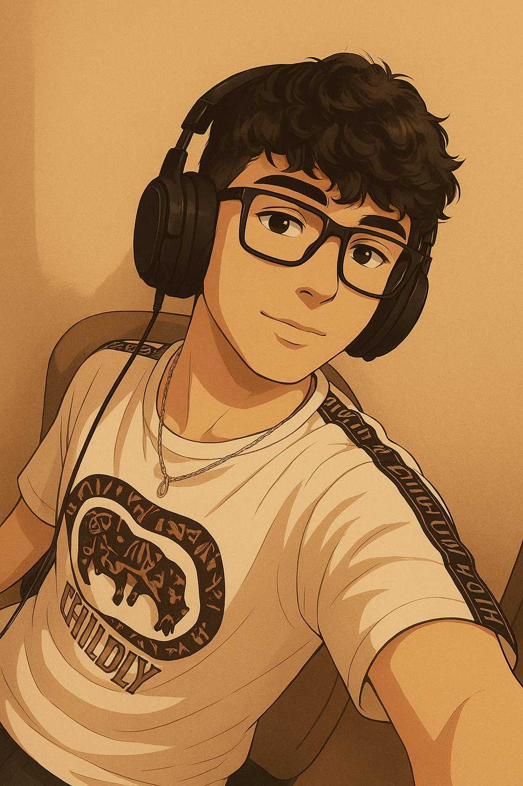

Mario Rodríguez RodríguezSígueme en Instagram: @mariio_rodriiguezz7 |
 |
__ Presentación__ __ Aficiones__ __ Objetivos__ __ Formación__ __ Contacto__
Hola, mi nombre es Mario y tengo 20 años. Soy estudiante de DAM y me apunté a este curso ya que desde pequeño estuve unido al mundo de la informática y quise aprovechar esta gran oportunidad para aprender y trabajar de ello.
| Año | Estudios | Centro |
|---|---|---|
| 2017–2022 | ESO | IES Botánico (San Fernando) |
| 2022–2024 | Bachillerato | IES Botánico |
| 2024–2026 | DAM (Grado Superior) | CITED |